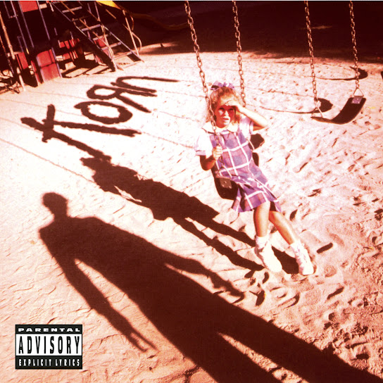
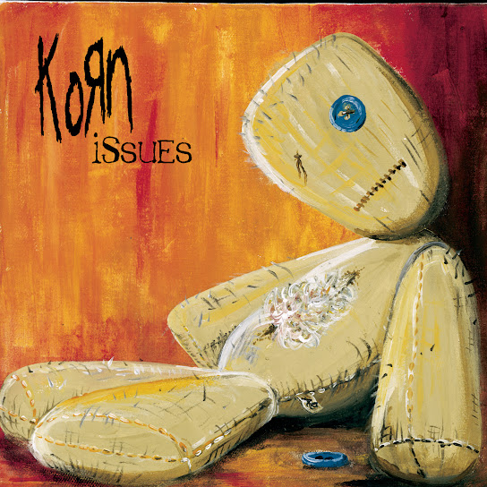
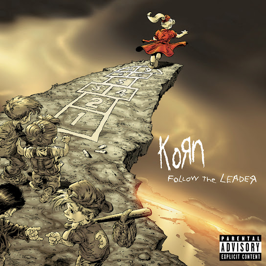

Discografía
Estos son algunos de los álbumes más representativos de esta banda, con enlace directo a YouTube para escuchar el disco completo.
Álbumes Destacados

Korn (1994)
"Un album el cual es el origen de este genero llamado Nu metal, todas las canciones son un clasico, siendo denominado como el mejor album de esta banda. Siendo este el primero”.
Escuchar en YouTube

El cuarto album de Korn, con clasicos como "falling Away For Me" que suenan hasta el dia de hoy (1999)
informacion breve.
Escuchar en YouTube

informacion de disco (1998)
Tercer album de la banda, con una de las canciones mas famosas de la banda "Frek On a Leash", siendo este el favorito de muchos fans.
Escuchar en YouTube